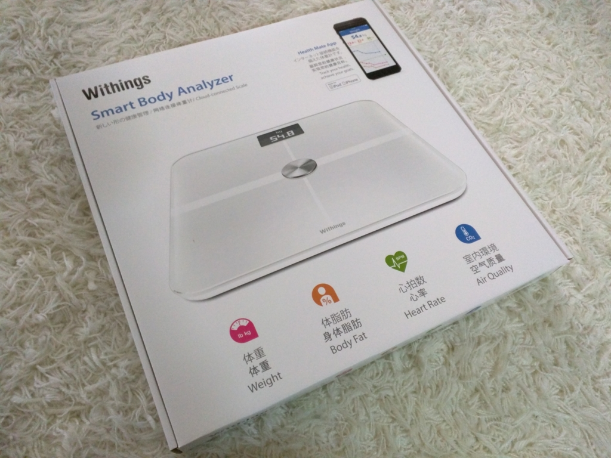
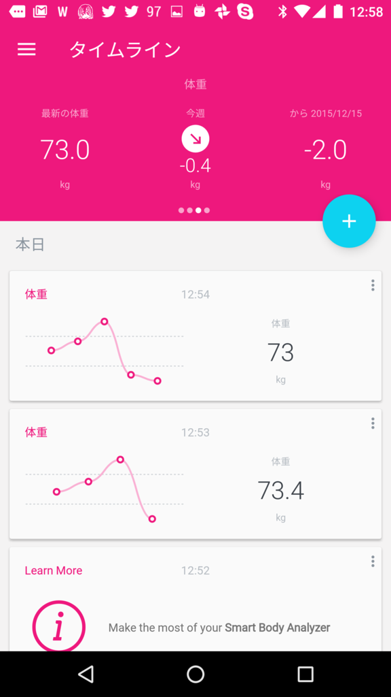
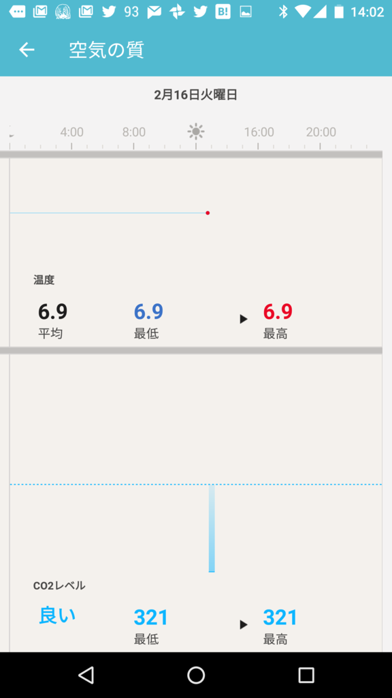

めっちゃ賢い体重計 Withings Smart Body Analyzer を買った。ちなみにランニングは諦めた。
公開日：

まず正直に白状します。俺にはランニングは無理だった。性格に合わなかった。初めて走る道は楽しいのだけど、何回かやると飽きるし、基本的に目的なしで外に出るのが嫌いな性分なのだ、きっと。もしかしてもう少し人間的に成熟すれば、ランニングの良さを実感で切りるようになるのかもしれないが、とりあえず今の自分には無理だった。ダメだ、死ぬまでぬくい場所にいたい。
しかしその一方で、体重が危機的な状況にあるらしいというのも確かだ。たまに温泉に行くと、そのたびに体重計の数値がブリブリあがっていく。とはいえ、温泉の体重計というのは、それほど正確なものではないだろう。なんせ、一日何十人、何百人もの人が、その上に乗るのだ。当然、すぐにガタがくるであろうが、体重計という装置そのものは利潤を生まないため、なかなかリプレースされることはないだろう。つまり、俺が乗る時だけ+3kgする不具合を抱えていてもおかしくはない。もっと信頼に値する体重計が必要だ。
というわけで、前々からほしかった体重計を買った(*ﾉωﾉ)

Withings スマート体重計 Smart Body Analyzer WS-50 ホワイト Wi-Fi/Bluetooth対応【日本正規代理店品】
- 出版社/メーカー: Withings
- 発売日: 2015/04/16
- メディア: エレクトロニクス
- この商品を含むブログ (1件) を見る
これさー、めっちゃ頭いいのさー。わいのヘルスウォッチとも連携（というか、おなじサービスでデータ管理できる感じ？）するしねー。
Wi-Fi と Bluetooth をしゃべれるのも、僕より賢い。そのほかにも、体脂肪率や心拍、室内の CO2 濃度なんかが測れるらしい。最初は体脂肪率と心拍をを測ってくれなくてちょっと困ったのだけど、体重計をアップデートしたらちゃんと計測してくれるようになった。ちなみに、家族で共用しても、かってに個人を識別して計測してくれるんだって。すげー。
 
さっそくこの子で体重を測ってみたら、体重は 73kg。ほら！ ほら！ この前の温泉の体重計は 78kg を指してたけど、5kg も狂っているじゃないか！
しかし、これはぬか喜びで、体重計を絨毯ではなくフローリングに置くと、ちゃんと 78kg を指すようになった。死にたい。
あと、この体重計、足に滑り止め加工がついていないようで、フローリングに置くと滑る。危うくひっくり返り、頭を打って死ぬところだった。確かに死にたいとは言ったが、そんな間抜けな死に方はしたくない。――というわけで、100均ショップで滑り止めのシートを買ってきて、体重計の下に敷くようにした。絨毯の時と異なり、体重もちゃんと計測されているみたい。生命の危機も回避できて、よかったよかった。
それにしても、運動、どうしようかな。東京にいるころはジムに通っていたけれど、こっちでもやってみるかな。マシンは苦手だけど、泳ぐのだけは割かし好きなので、長続きするかもしれない。